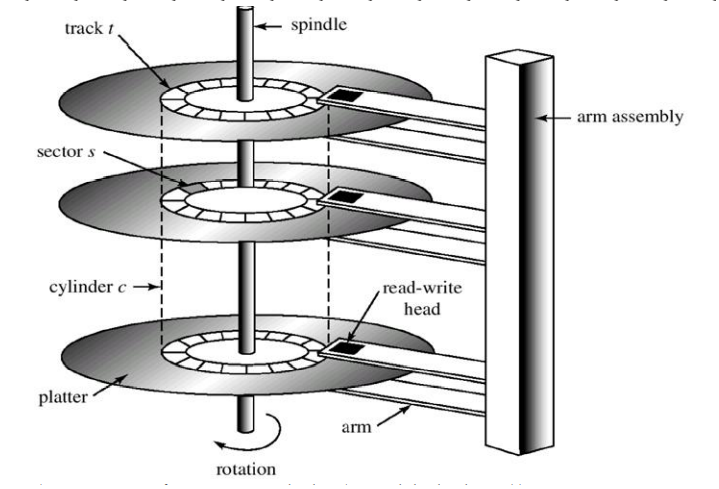

Magnetic disks provide the bulk of secondary storage for modern computer systems. Each disk platter has a flat circular shape, like a CD. Common platter diameters range from 1.8 to 5.25 inches. The two surfaces of a platter are covered with a magnetic material. We store information by recording it magnetically on the platters.
A read-write head "flies" just above each surface of every platter. The heads are attached to a disk arm, which moves all the heads as a unit. The surface of a platter is logically divided into circular tracks, which are subdivided into sectors. The set of tracks that are at one arm position forms a cylinder. There may be thousands of concentric cylinders in a disk drive, and each track may contain hundreds of sectors. The storage capacity of common disk drives is measured in gigabytes.
Structure of Magnetic disks (Hard disk drive)
When the disk is in use, a drive motor spins it at high speed. Most drives rotate 60 to 200 times per second. Disk speed has two parts. The transfer rate is the rate at which data flow between the drive and the computer. The positioning time (or random-access time) consists of seek time and rotational latency. The seek time is the time to move the disk arm to the desired cylinder. And the rotational latency is the time for the desired sector to rotate to the disk head. Typical disks can transfer several megabytes of data per second and they have seek times and rotational latencies of several milliseconds.
Capacity of Magnetic disks(C) = S x T x P x N
Where,
S = no. of surfaces = 2 x no. of disks,
T = no. of tracks in a surface,
P = no. of sectors per track,
N = size of each sector
Transfer Time: T = b / (r x N)
The transfer time to or from the disk depends on the rotation speed of the
disk in the following fashion:
Where, T = transfer time,
b =number of bytes to be transferred,
N = number of bytes on a
track,
r = rotation speed, in revolutions per second.
Modern disk drives are addressed as large one-dimensional arrays of logical blocks,
where the logical block is the smallest unit of transfer. The one-dimensional array of logical
blocks is mapped onto the sectors of the disk sequentially. Sector 0 is the first sector of the
first track on the outermost cylinder. The mapping proceeds in order through that track, then
through the rest of the tracks in that cylinder, and then through the rest of the cylinders from
outermost to innermost.
By using this mapping, we can convert a logical block number into an old-style disk address that consists of a cylinder number, a track number within that cylinder, and a sector number within that track. In practical, it is difficult to perform this translation, for two reasons. First, most disks have some defective sectors, but the mapping hides this by substituting spare sectors from elsewhere on the disk. Second, the number of sectors per track is not a constant on some drives.
The density of bits per track is uniform. This is called Constant linear velocity (CLV). The disk rotation speed can stay constant and the density of bits decreases from inner tracks to outer tracks to keep the data rate constant. This method is used in hard disks and is known as constant angular velocity (CAV).
Disk Scheduling
The seek time is the time for the disk arm to move the heads to the cylinder containing the desired sector. The rotational latency is the time waiting for the disk to rotate the desired sector to the disk head. The disk bandwidth is the total number of bytes transferred divided by the total time between the first request for service and the completion of the last transfer.We can improve both the access time and the bandwidth by scheduling the servicing of disk I/O requests in a good order. Several algorithms exist to schedule the servicing of disk I/O requests as follows: